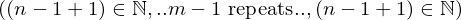
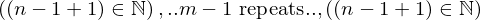
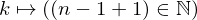
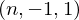

In [1]:
import proveit
# Automation is not needed when building an expression:
proveit.defaults.automation = False # This will speed things up.
proveit.defaults.inline_pngs = False # Makes files smaller.
# import Expression classes needed to build the expression
from proveit import ExprRange
from proveit._common_ import k, m, n
from proveit.logic import And, InSet
from proveit.number import Add, Naturals, Neg, one
In [2]:
# build up the expression from sub-expressions
subExpr1 = Neg(one)
expr = And(ExprRange(k, InSet(Add(n, subExpr1, one), Naturals), one, Add(m, subExpr1)))
Out[2]:
expr: 
In [3]:
# check that the built expression is the same as the stored expression
%check_expr
In [4]:
# Show the LaTeX representation of the expression for convenience if you need it.
print(expr.latex())
In [5]:
# display the expression information
expr.exprInfo()
Out[5]:
| core type | sub-expressions | expression | |
|---|---|---|---|
| 0 | Operation | operator: 1 operands: 2 | |
| 1 | Literal |  | |
| 2 | ExprTuple | 3 |  |
| 3 | ExprRange | lambda_map: 4 start_index: 19 end_index: 5 |  |
| 4 | Lambda | parameter: 6 body: 7 |  |
| 5 | Operation | operator: 14 operands: 8 |  |
| 6 | Variable |  | |
| 7 | Operation | operator: 9 operands: 10 |  |
| 8 | ExprTuple | 11, 17 |  |
| 9 | Literal |  | |
| 10 | ExprTuple | 12, 13 |  |
| 11 | Variable |  | |
| 12 | Operation | operator: 14 operands: 15 |  |
| 13 | Literal |  | |
| 14 | Literal |  | |
| 15 | ExprTuple | 16, 17, 19 |  |
| 16 | Variable |  | |
| 17 | Operation | operator: 18 operand: 19 |  |
| 18 | Literal |  | |
| 19 | Literal |  |